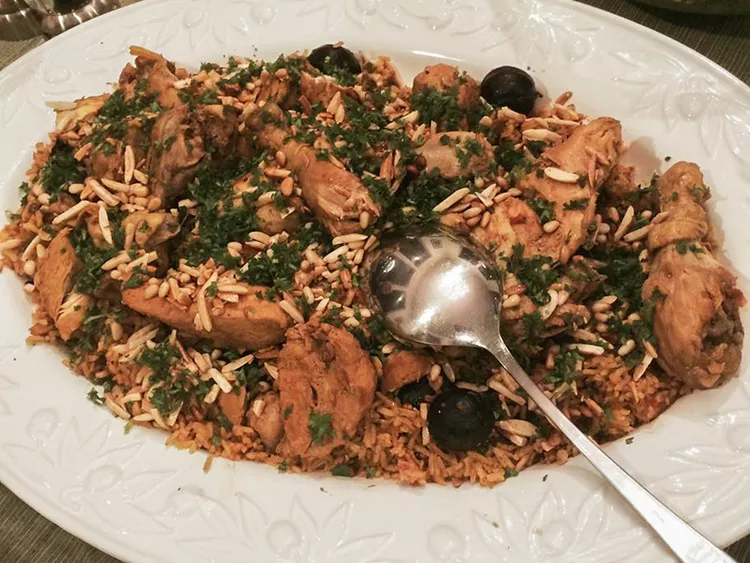

Home
Kabsa

Description
Kabsa is a Saudi dish that is also loved throughout the gulf region
Ingredients
Kabsa Spice Mix:
- ½ teaspoon saffron
- ½ teaspoon ground cinnamon
- ½ teaspoon ground allspice
- ½ teaspoon dried whole lime powder
- ¼ teaspoon ground cadamom
- ¼ teaspoon ground white pepper
Kabsa Dish:
- ¼ cup butter
- 1 onion, finely chopped
- 6 cloves garlic, minced
- 1 (3 pound) whole chicken, cut into 8 pieces
- ¼ cup tomato puree
- 1 (14.5 ounce) can diced tomatoes, undrained
- 3 carrots, peeled and grated
- 2 whole cloves
- 1 pinch ground nutmeg
- 1 pinch ground cumin
- 1 pinch ground coriander
- salt and freshly ground black pepper to taste
- 3 ¼ cups hot water, plus more if needed
- 1 cube chicken bouillon
- 2 ¼ cups unrinsed basmati rice
Steps:
- Make spice mix: Stir together saffron, cinnamon, allspice, lime powder, cardamom, and white pepper in a
small bowl; set aside.
- Make dish: Melt butter in a large stockpot or Dutch oven over medium heat. Cook and stir onion and
garlic in butter until onion has softened and turned translucent, about 5 minutes. Add chicken and cook
over medium-high heat, stirring occasionally, until lightly browned, about 10 minutes. Mix in tomato
purée.
- Stir in canned tomatoes with juice, carrots, cloves, nutmeg, cumin, coriander, salt, black pepper, and
reserved spice mix. Cook for about 3 minutes; pour in water and add chicken bouillon cube.
- Bring sauce to a boil, then reduce heat, and cover the pot. Simmer until chicken is no longer pink and
the juices run clear, about 30 minutes.
- Make spice mix: Stir together saffron, cinnamon, allspice, lime powder, cardamom, and white pepper
in a small bowl; set aside.
- Make dish: Melt butter in a large stockpot or Dutch oven over medium heat. Cook and stir onion and
garlic in butter until onion has softened and turned translucent, about 5 minutes. Add chicken and
cook over medium-high heat, stirring occasionally, until lightly browned, about 10 minutes. Mix in
tomato purée.
- Stir in canned tomatoes with juice, carrots, cloves, nutmeg, cumin, coriander, salt, black pepper,
and reserved spice mix. Cook for about 3 minutes; pour in water and add chicken bouillon cube.
- Bring sauce to a boil, then reduce heat, and cover the pot. Simmer until chicken is no longer pink
and the juices run clear, about 30 minutes.